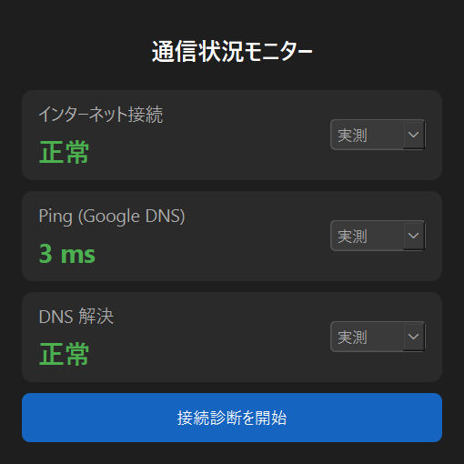

Desktop Mini Tool
ネットワーク接続診断ミニツール
インターネット接続、Ping、DNS、デフォルトゲートウェイを確認しながら、 ネットワーク障害の切り分け手順を学べる Python / Tkinter 製のミニツールです。

できること
- インターネット接続の有無を確認します。
- Google DNS への Ping 応答時間を確認します。
- DNS解決ができるか確認します。
- 接続診断ウィザードで、障害箇所を順番に切り分けます。
- 正常・警告・異常をシミュレーションして研修で説明できます。
実行内容
http://www.google.comへのHTTP接続確認8.8.8.8へのpingwww.google.comのDNS名前解決ipconfigによるIPv4/IPv6とデフォルトゲートウェイ確認
使い方
- Python 3 が入った Windows PC を用意します。
main.pyをダウンロードします。- PowerShellまたはコマンドプロンプトで実行します。
python main.py注意点
- このツールは実ネットワークに対して接続確認を行います。
- 社内端末で使う場合は、組織のルールに従ってください。
- 個人情報や機密情報を収集・送信する処理はありません。
- 環境によっては ping や外部HTTP接続が制限されている場合があります。